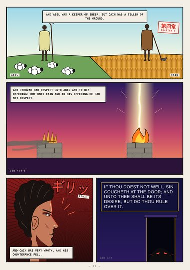
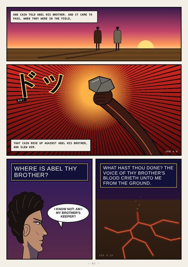
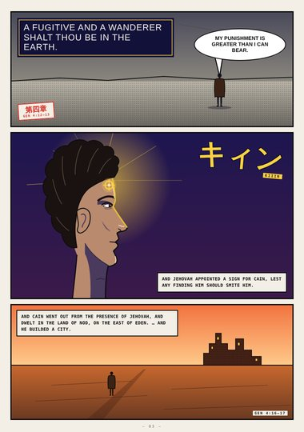
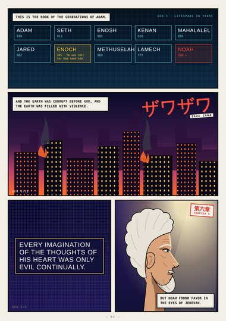
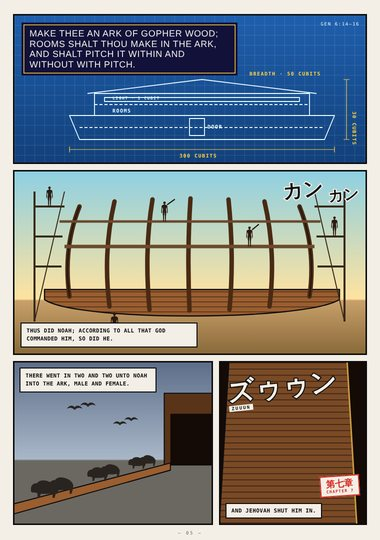
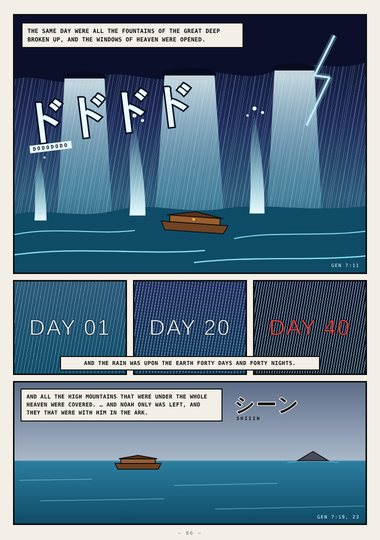
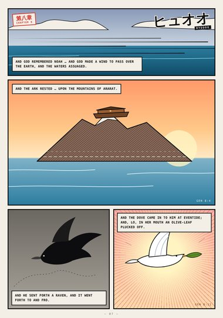
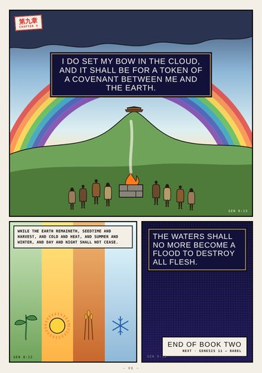

Genesis · Book Two · Genesis 4–9
The Flood
Cain and Abel, the generations of Adam, the ark, the deluge, and the bow in the cloud.
Start reading ›Pages
 CoverCoverGenesis 4–9
CoverCoverGenesis 4–9
Page 1The OfferingsGenesis 4:2–7
Page 2In the FieldGenesis 4:8–11
Page 3The Mark of CainGenesis 4:12–17
Page 4The GenerationsGenesis 5 – 6:8
Page 5The ArkGenesis 6:14 – 7:16
Page 6The DelugeGenesis 7:11–23
Page 7The Raven and the DoveGenesis 8
Page 8The CovenantGenesis 8:20 – 9:17